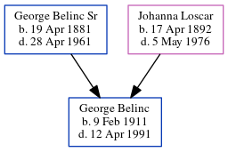

George Belinc 1911 - 1991
[ Home ] | [ Calendar ] | [ Surnames Index ] | [ Census Index ] | [ Family History ]The child of George Belinc Sr and Johanna Loscar, George Belinc, the first cousin once-removed on the mother's side of Michele Copp (née Phillips), was born in Essen, Essen, Nordrhein-Westfalen, Germany on Feb 9, 19111.
During his life, he was living in Davis, Tucker, West Virginia, USA in 19403; in North Carolina or West Virginia before 19512; and in Kearneysville, West Virginia, USA4.
He died on Apr 12, 19911,2 and was buried in Martinsburg, Berkeley County, West Virginia after Apr 12, 19911.
Parents
- George Anthony Sr was born on Apr 19, 1881
- Johanna A. was born on Apr 17, 1892
Citations
- U.S., Find A Grave Index, 1600s-Current Ancestry.com Operations, Inc.
- Social Security Death Index Online publication - Provo, UT, USA: MyFamily.com, Inc., 2006.Original data - Social Security Administration. Social Security Death Index, Master File. Social Security Administration.Original data: Social Security Administration. Social Security Death Inde
- U.S., World War II Draft Cards Young Men, 1940-1947 Ancestry.com Operations, Inc. ( View Sources.)
- U.S., Public Records Index, 1950-1993, Volume 2 Ancestry.com Operations, Inc. (Voter Registration Lists, Public Record Filings, Historical Residential Records, and Other Household Database Listings.)
Family Tree
Generated by ged2site. Last updated on Jun 6, 2024